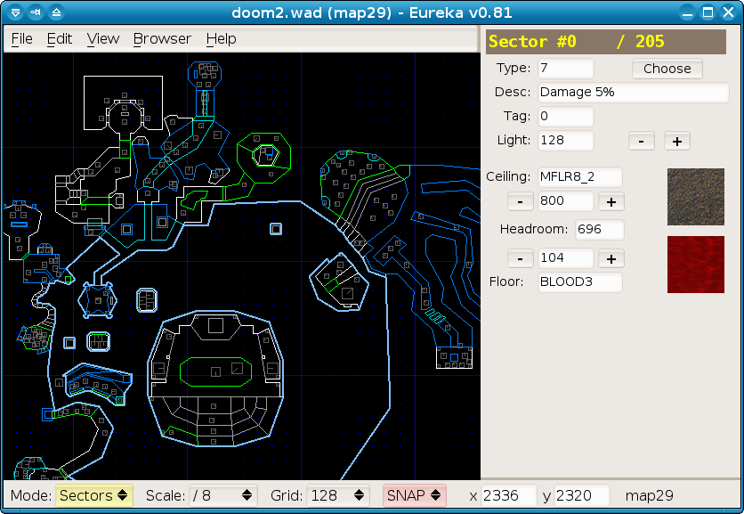
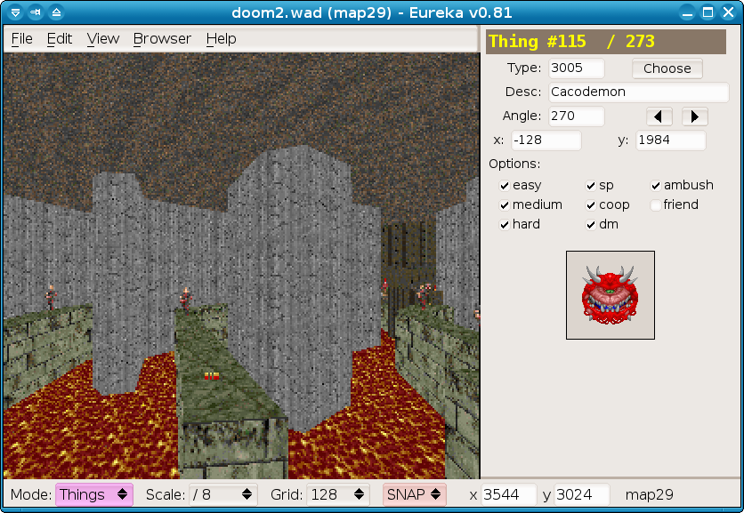
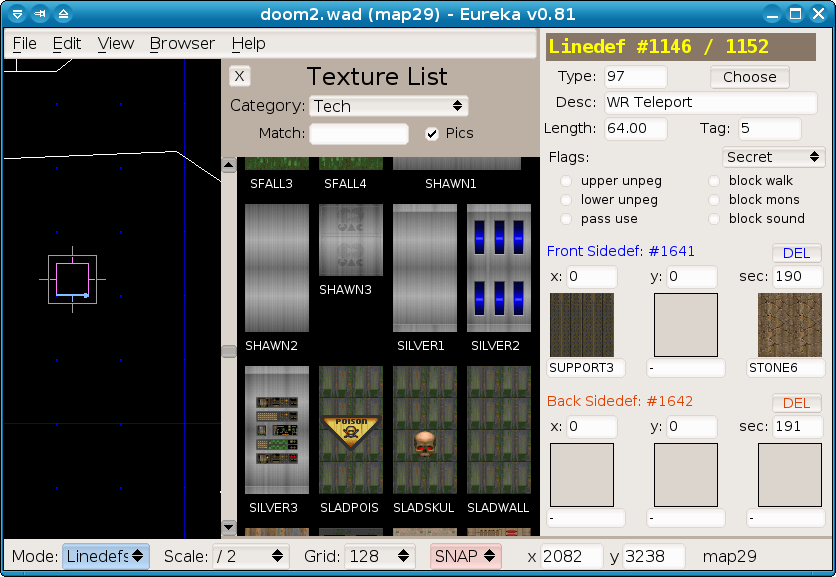

Eureka is a map editor for the classic DOOM games, and a few related games such as Heretic, Hexen and Strife. The supported operating systems are: Linux (and other Unices), Windows and macOS.
Eureka is free software under the GNU General Public License (GPL). Please note that it comes with absolutely NO WARRANTY of any kind.
It started when the Yadex editor was ported to a proper GUI toolkit, namely FLTK, and implemented a system for multi-level Undo / Redo. These and other features have required rewriting large potions of the existing code, and adding lots of new code too. Eureka is now an indepedent program with its own workflow and its own quirks :-)
See the Credits page for more information / copyrights.
There is a discussion forum on Eureka's SF project page, as well as the issue tracker on GitHub there for making bug reports or feature suggestions.
Normal editing:

The 3D preview:

Texture browser:
